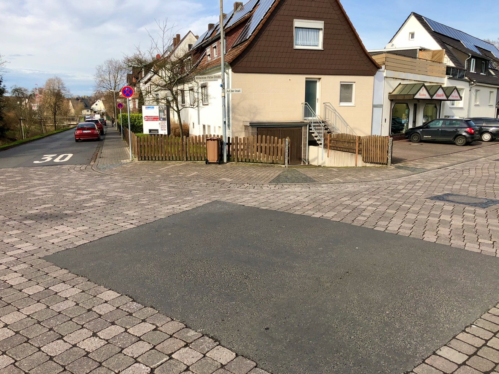
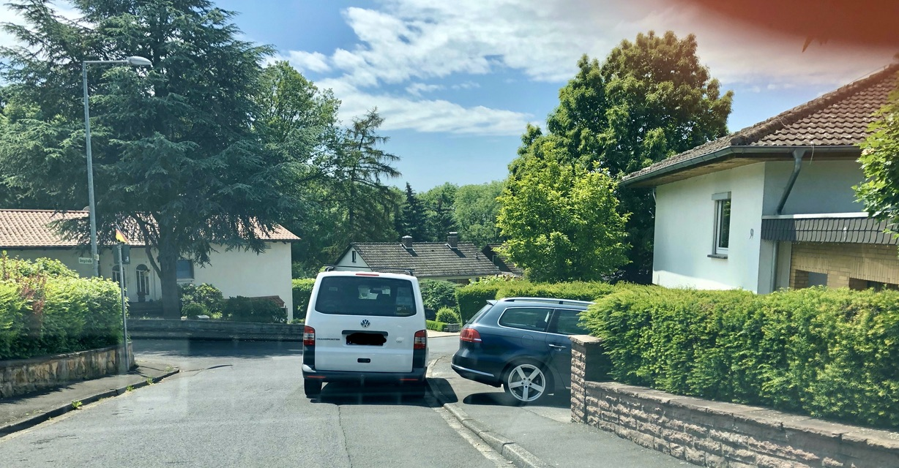

AG Nahmobilität
grün, smart ...
Sofortmaßnahmen
Tunnel
Ziel: Sicherheitsgefühl erhöhen.


- Bordsteinkanten weiß lackieren
- Verbesserung der Beleuchtung (auch am Tag)
- Instandsetzen der bestehenden Beleuchtung
Brücken
Ziel: Radverkehr sicherer gestalten.


- Poller entfernen.
- Bordstein absenken.
Freigabe Radverkehr
Ziel: Freigabe für den Radverkehr Sonnenallee

- Verkehrszeichen (wieder) aufhängen. oder:
- Bordabsenkung ab Abzweig und Freigabe für den Radverkehr durch Verkehrszeichen.
Kreuzungen
Ziel: Erhöhung der Verkehrssicherheit
- Poller am Gehweg
- Wegfall / Umwidmung Parkplätze Heiligenröder Str / Ecke Schuwirth
- Aufhebung Radwegebenutzungspflicht
Hecken
Ziel: Erhöhung der Verkehrssicherheit
- Bauliche Veränderung, um das Überhangparken zu verhindern.
- Kontrolle von Hecken usw. zur Verbesserung der Sicht...
Wunschzettel
Übergang. Haarweg. Parkplatz. Sportplatz. Diverses.Fahrradzonen
Ziel:
- Stärkung des Radverkehrs
- Angebotsförderung für Radverkehr als Alternative zum Kfz (Klima, Lärm)
- Geschwindigkeitsdämpfende Wirkung innerhalb der Zone (Nebeneinanderfahren)
- Anbindung an das überörtliche Wegenetz
- Unterstützung von Freizeitangeboten
- Förderung der Nahversorgung (+Radabstellbügel)
Was ist eine Fahrradzone?
- Analog zu Tempo 30-Zonen
- Regeln wie in Fahrradstraßen (z. B. Radfahrende haben Vorrang und dürfen nebeneinander fahren)
- Radverkehr darf weder gefährdet noch behindert werden
- mit wenig Aufwand viel für den Radverkehr schaffen
- Beschilderung und Markierung genügen
Vision
Fußgänger-und Radbrücke über die Fulda

- Anschluss die StraBa Linie 6 und das Klinikum sowie das Landkreisgymnasium
- Anschluss an Radfernweh
mehr Infos.